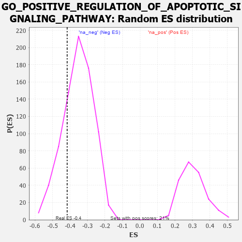

| | | Dataset | 7d |
| Phenotype | NoPhenotypeAvailable |
| Upregulated in class | na_neg |
| GeneSet | GO_POSITIVE_REGULATION_OF_APOPTOTIC_SIGNALING_PATHWAY |
| Enrichment Score (ES) | -0.4165038 |
| Normalized Enrichment Score (NES) | -1.1724635 |
| Nominal p-value | 0.23320659 |
| FDR q-value | 0.6597809 |
| FWER p-Value | 1.0 |
Table: GSEA Results Summary
 Fig 1: Enrichment plot: GO_POSITIVE_REGULATION_OF_APOPTOTIC_SIGNALING_PATHWAY
Fig 1: Enrichment plot: GO_POSITIVE_REGULATION_OF_APOPTOTIC_SIGNALING_PATHWAY
Profile of the Running ES Score & Positions of GeneSet Members on the Rank Ordered List
| PROBE | GENE SYMBOL | GENE_TITLE | RANK IN GENE LIST | RANK METRIC SCORE | RUNNING ES | CORE ENRICHMENT | | 1 | GSK3A | | | 351 | 0.745 | -0.0093 | No |
| 2 | BAX | | | 387 | 0.711 | 0.0197 | No |
| 3 | RAD9A | | | 418 | 0.681 | 0.0479 | No |
| 4 | HTRA2 | | | 527 | 0.621 | 0.0634 | No |
| 5 | DEDD2 | | | 999 | 0.484 | 0.0268 | No |
| 6 | NCK2 | | | 1131 | 0.458 | 0.0318 | No |
| 7 | TFDP1 | | | 1180 | 0.450 | 0.0469 | No |
| 8 | INHBB | | | 1514 | 0.388 | 0.0232 | No |
| 9 | WWOX | | | 1688 | 0.359 | 0.0182 | No |
| 10 | FAF1 | | | 2340 | 0.255 | -0.0518 | No |
| 11 | BECN1 | | | 2828 | 0.179 | -0.1048 | No |
| 12 | DAPK3 | | | 2880 | 0.169 | -0.1033 | No |
| 13 | PDCD5 | | | 2885 | 0.169 | -0.0958 | No |
| 14 | PIAS4 | | | 3034 | 0.145 | -0.1077 | No |
| 15 | SMAD3 | | | 3303 | 0.105 | -0.1365 | No |
| 16 | FIS1 | | | 3654 | 0.051 | -0.1783 | No |
| 17 | NF1 | | | 3713 | 0.040 | -0.1837 | No |
| 18 | PDIA3 | | | 4740 | -0.147 | -0.3061 | No |
| 19 | FBXW7 | | | 4816 | -0.161 | -0.3079 | No |
| 20 | MMP9 | | | 5108 | -0.227 | -0.3339 | No |
| 21 | FLCN | | | 5140 | -0.235 | -0.3268 | No |
| 22 | PTEN | | | 5262 | -0.261 | -0.3298 | No |
| 23 | CASP8 | | | 5678 | -0.369 | -0.3647 | No |
| 24 | UBB | | | 6090 | -0.503 | -0.3929 | Yes |
| 25 | STK4 | | | 6145 | -0.518 | -0.3754 | Yes |
| 26 | TFAP4 | | | 6254 | -0.556 | -0.3629 | Yes |
| 27 | TRAF7 | | | 6290 | -0.571 | -0.3405 | Yes |
| 28 | GSK3B | | | 6719 | -0.768 | -0.3583 | Yes |
| 29 | DNM1L | | | 6963 | -0.913 | -0.3461 | Yes |
| 30 | CYLD | | | 7333 | -1.206 | -0.3359 | Yes |
| 31 | WDR35 | | | 7357 | -1.225 | -0.2813 | Yes |
| 32 | CASP2 | | | 7442 | -1.322 | -0.2298 | Yes |
| 33 | BOK | | | 7715 | -1.817 | -0.1788 | Yes |
| 34 | ST18 | | | 7780 | -2.007 | -0.0926 | Yes |
| 35 | TRAF2 | | | 7861 | -2.481 | 0.0139 | Yes |
Table: GSEA details [plain text format]

Fig 2: GO_POSITIVE_REGULATION_OF_APOPTOTIC_SIGNALING_PATHWAY: Random ES distribution
Gene set null distribution of ES for GO_POSITIVE_REGULATION_OF_APOPTOTIC_SIGNALING_PATHWAY